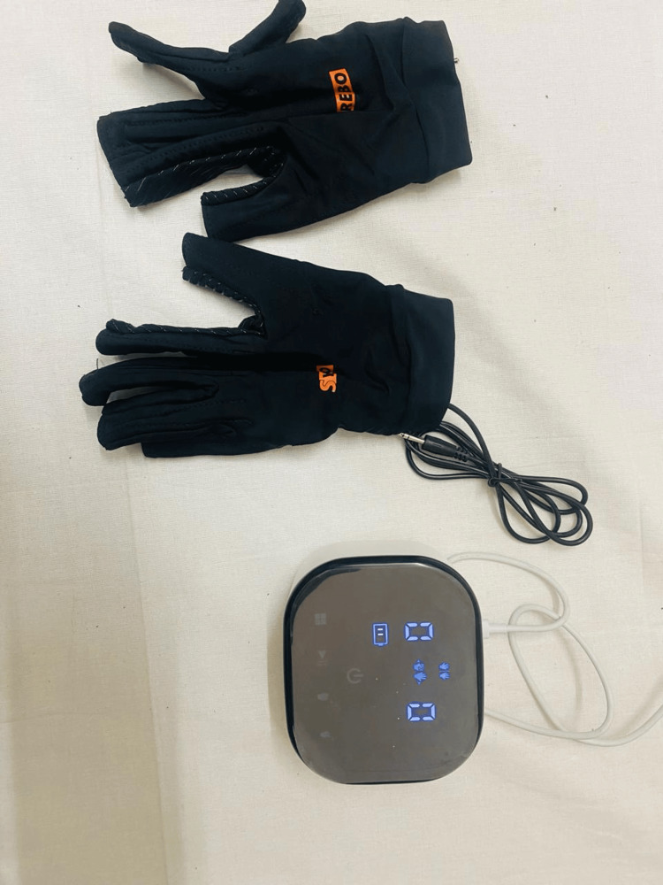
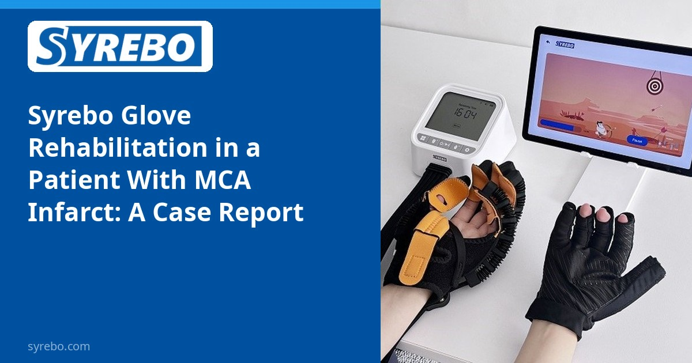
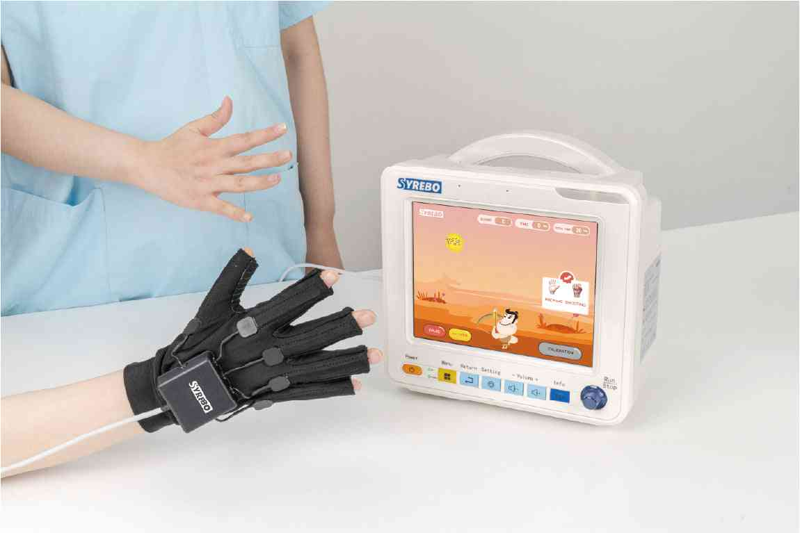

Syrebo rubrika kliničkih istraživanja
Čitanja temeljena na dokazima o robotskoj rehabilitaciji šake
Iz članka
Effectiveness of Syrebo's Glove Rehabilitation Program in a Patient With Middle Cerebral Artery Infarct: A Case Report
Sharma VS, Sharath HV, Sasun AR
Cureus, 2024, 16(4): e59314
DOI: 10.7759/cureus.59314 · PMID: 38817453 · PMC11136872



Randomizirano ispitivanje opisuje prosječnu razliku. Slučaj opisuje kako je rehabilitacija uređena za jednu osobu. Godine 2024. u Cureusu Sharma i kolege izvijestili su o ženi od 66 godina s infarktom u teritorijima srednje moždane arterije koja je dobila neurofizioterapiju građenu oko programa Syrebo rukavice. Izvješće prati tijek opažanja i funkcionalne promjene. To je jedan slučaj i ne generalizira se.
Infarkt u tom teritoriju često pogađa ruku i šaku zajedno s jezikom ili kognicijom, pa je plan više od slabe šake. Obiteljima obično treba znati kada je vježba s rukavicom bila unutar fizioterapije i tko ju je nadzirao, više nego postotak.
Slučaj može zapisati taj slijed. Nema paralelne kontrole, pa svaka promjena prije-poslije miješa spontani oporavak, uobičajenu skrb i rukavicu. Ti se dijelovi ne mogu razdvojiti.
Članak raspravlja o programu Syrebo rukavice i ne imenuje model. Fotografija rukavice i konzole slika je 2 tog izvješća otvorenog pristupa (CC BY 4.0), prikazana u izvatku gore. Nije slika iz drugog pregleda.
Dizajn studije
Izvješće o jednom slučaju, ne randomizirano ispitivanje. Nakon što je osoba bila medicinski stabilna, kliničari su dali neurofizioterapiju koja je uključivala program Syrebo rukavice.
Uzorak i raspored
Žena od 66 godina s obostranim infarktom teritorija SMA. Izvješće bilježi opažanja i funkcionalnu promjenu. Ne daje statistiku među skupinama.
Glavni nalazi
Vrijednost izvješća tijek je skrbi, ne stopa poboljšanja. Pokazuje kako je meka rukavica stavljena u rehabilitaciju jedne osobe s teškim infarktom, pod profesionalnim nadzorom. Promjena u jednom slučaju nije obećani stupanj oporavka.
U rubrici koja je uglavnom od randomiziranih ispitivanja jedan slučaj ovdje je da pokaže kako je program rabljen kod osobe. Ispunjava narativnu prazninu. Ne podiže razinu dokaza.
Jedan slučaj ne može procijeniti koliko se često javljaju neželjeni događaji i ne može reći odgovara li bolje akutna, subakutna ili kronična faza. Ta pitanja ostaju kod kontroliranih studija.
Ograničenja Jedan slučaj. Nije opći učinak. Funkcionalna promjena ne može se pripisati samo rukavici.